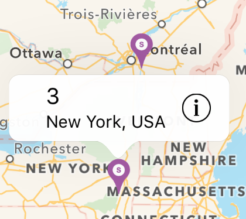

is back - June 13 - 17, 2016
Application is now closed, and results will be out on May 9, 2016. Good luck to all of us WWDC Scholarship Applicants.
is back - June 13 - 17, 2016
Application is now closed, and results will be out on May 9, 2016. Good luck to all of us WWDC Scholarship Applicants.

In my implementation, I added both ClusterAnnotationView.h and ClusterAnnotationView.m of the QTree Library. You can override it or customize or your own ClusterAnnotation.
Create a swift file that contains your data model. As an example, i've created a Scholar.swift file to represent my data model.

Just dragged the MKMapView to your View Controller inside storyboard directly.

Scholar Annotations are the annotations on mapView that representents each Scholars.
As an example, i've created a ScholarAnnotation.swift file to represent my ScholarAnnotation shown on the map.

Lastly, we will implement the MKMapViewDelegate. Inside the LocationViewController.swift:
Change you viewDidLoad method to the following:

Then add a function for the button action. In my example, i've named it - buttonAction.

Initialize/Declare some of the global variables.

regionDidChangeAnimated is one of the delegate method used by MKMapViewDelegate. This is where we will call the reloadAnnotations method.

Every time user change the map scale, we will call reloadAnnotations. This will update our mapView correspondingly.

We now can configure different views for different annotation.

If you are a WWDCScholar or WWDCStudent and wants to share your knowlegde and experience, just message HERE.